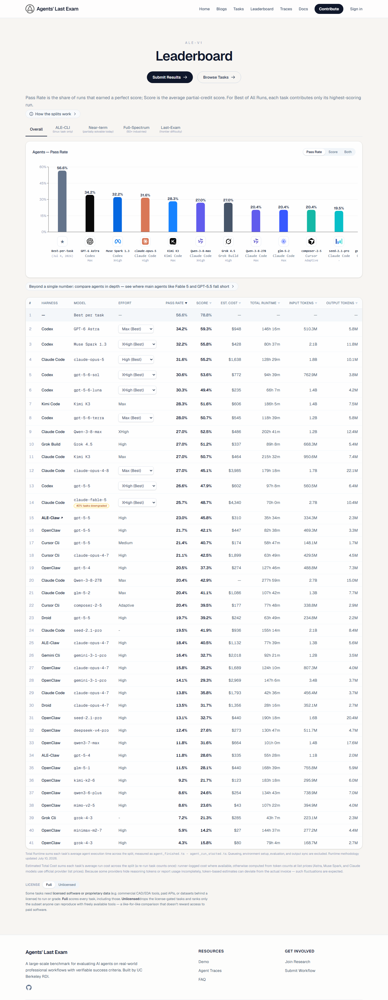
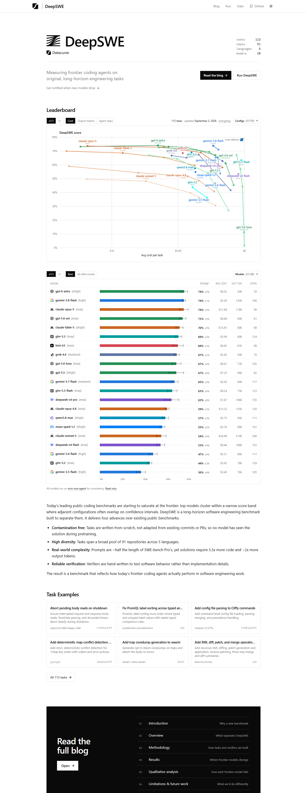

Generated 2026-09-18T09:14:57.453Z from production deployment upbeat-clam-790. This batch adds eight missing official result cells; it creates no model and no benchmark and replaces no score.
| Canonical model config | Benchmark | Raw score | Source | Operation |
|---|---|---|---|---|
| GPT-6 Astra (max) | agents-last-exam-v1-codex | 342 | official table | insert |
| Muse Spark 1.3 (xhigh) | agents-last-exam-v1-codex | 322 | official table | insert |
| GPT-5.5 (xhigh) | agents-last-exam-v1-codex | 266 | official table | insert |
| GPT-5.6 Sol (max) | deepswe | 730 | official table | insert |
| Grok 4.6 (medium) | deepswe | 670 | official table | insert |
| GPT-5.6 Luna (max) | deepswe | 670 | official table | insert |
| Muse Spark 1.2 (xhigh) | deepswe | 550 | official table | insert |
| Gemini 3.5 Flash (high) | deepswe | 360 | official table | insert |
Scale conversion: both benchmarks use SupraBench 0–1000 storage. ALE percentages retain one decimal and multiply by 10 (34.2% → 342). DeepSWE's displayed whole percentages multiply by 10 (73% → 730).
The page exposes 41 rows, benchmark version ALE-V1, harness, effort and pass rate. Only Codex rows marked Best were eligible for the tracked agents-last-exam-v1-codex identity.

The page exposes 21 of 28 model rows under v1.1 Best, updated September 3, 2026. Existing precise values were not overwritten by the rounded display.

● present before this run; + accepted in this run; — no qualifying published cell found after the official-source sweep.
| Family | B1 | B2 | B3 | B4 | B5 | B6 | B7 | B8 | B9 | B10 | B11 | B12 | B13 | B14 | B15 | B16 | B17 | B18 | B19 | B20 | B21 | B22 | B23 | B24 | B25 | B26 | B27 | B28 |
|---|---|---|---|---|---|---|---|---|---|---|---|---|---|---|---|---|---|---|---|---|---|---|---|---|---|---|---|---|
| GPT-6 Astra | — | ● | ● | — | — | — | — | — | — | — | ● | ● | ● | — | — | — | ● | — | — | ● | + | ● | ● | ● | ● | ● | ● | ● |
| Claude Fable 5.1 | — | ● | — | — | — | — | — | — | — | — | — | ● | ● | — | — | — | — | — | — | ● | — | ● | ● | ● | ● | ● | ● | ● |
| Claude Mythos 5 | — | — | — | ● | — | — | — | — | — | — | — | — | — | — | — | — | — | — | — | — | — | — | — | — | — | — | — | — |
| Grok 4.6 | — | ● | — | — | — | — | — | — | — | — | — | ● | ● | — | — | — | ● | — | — | ● | — | ● | ● | ● | ● | ● | ● | ● |
| DeepSeek V4.1 Flash | — | ● | — | — | — | — | — | — | — | — | ● | ● | ● | — | — | — | — | — | — | — | — | ● | ● | ● | ● | ● | ● | ● |
| Gemini 3.8 Flash | — | ● | — | — | — | — | — | — | — | — | ● | ● | ● | — | — | — | ● | — | — | ● | — | ● | ● | ● | ● | ● | ● | ● |
| Muse Spark 1.3 | — | ● | — | — | — | — | — | — | — | — | ● | ● | ● | — | — | — | — | — | — | ● | + | ● | ● | ● | ● | ● | ● | ● |
| Claude Opus 5 | — | ● | ● | — | — | — | — | — | — | — | ● | ● | ● | — | — | — | ● | — | ● | ● | — | ● | ● | ● | ● | ● | ● | ● |
| Claude Sonnet 5 | — | ● | — | ● | — | — | — | — | — | — | ● | ● | ● | — | — | — | ● | — | — | ● | — | — | ● | ● | — | ● | — | — |
| Kimi K3 | — | ● | ● | — | — | — | — | — | — | — | ● | ● | ● | — | — | ● | ● | — | — | ● | — | ● | ● | ● | ● | ● | ● | ● |
| GPT-5.6 Sol | — | ● | ● | ● | ● | — | — | — | — | ● | ● | ● | ● | ● | ● | — | ● | — | ● | ● | ● | ● | ● | ● | ● | ● | ● | ● |
| GPT-5.6 Terra | — | ● | — | ● | ● | — | — | — | — | — | ● | ● | ● | ● | ● | ● | ● | — | ● | ● | ● | ● | ● | ● | ● | ● | ● | ● |
| GPT-5.6 Luna | — | ● | — | ● | — | — | — | — | — | — | ● | ● | ● | — | — | ● | ● | — | ● | ● | ● | ● | ● | ● | ● | ● | ● | ● |
| GLM-5.3 | — | ● | — | — | — | — | — | — | — | — | — | ● | ● | — | — | — | ● | — | — | ● | — | ● | ● | ● | ● | ● | ● | ● |
| Qwen3.8 2.4T A95B | — | ● | — | — | — | — | — | — | — | — | — | ● | ● | — | — | — | — | — | — | ● | — | — | ● | ● | — | ● | — | — |
swe-bench-verified)humanity-s-last-exam)arc-agi-2)swe-bench-pro)textquests)erqa)mindcube)spatialviz)intphys-2)enigmaeval)mmmu-pro)aa-long-context-reasoning)scicode)terminal-bench-hard)tau2-bench-telecom)apex-agents-aa)deepswe)skatebench)arc-agi-3)terminal-bench-v2-1-aa-terminus-2)agents-last-exam-v1-codex)automationbench-aa)aa-omniscience)critpt)gdpval-aa-v2)terminal-bench-4-0)gdp-pdf)aa-briefcase)OpenAI, Anthropic, Google, xAI, DeepSeek and Mistral release channels were checked. No general-purpose flagship release newer than the currently tracked frontier set produced a qualifying, complete official result table. Google's September 15 audio models are specialised speech models; xAI's September 16 Memory item is a product capability, not a new model.
Every one of the 28 tracked official sources was revisited. Non-AA sources included ARC-AGI-2/3, DeepSWE, Enigma, ERQA, IntPhys 2, MindCube, MMMU, SkateBench, SpatialViz, SWE-bench Pro/Verified, τ²-bench, Terminal-Bench and TextQuests. No additional unambiguous current frontier cell was published. Candidate tables mentioned in vendor releases (CursorBench 3.2, FrontierCode 1.1, APEX-SWE and Harvey LAB) were not admitted: none supplied a qualifying original leaderboard with at least 20 current models plus the required methodology and scale evidence.
No canonical model was renamed or merged. Existing source aliases found and retained as mappings:
Claude Fable 5 (with fallback) → Claude Fable 5 (adaptive max/fallback)GLM-5.3-Flash → GLM-5.3-Flash (max)Qwen3.8 2.4T A95B → Qwen3.8 2.4T A95B (max)Nemotron 3 Ultra → NVIDIA Nemotron 3 UltraDeferred configurations: Gemini 3.7 Flash (medium) and Gemini 3.6 Flash (high) appear on DeepSWE but are absent from production. Unblock only when the exact effort appears on at least four tracked benchmarks, or when a maintainer explicitly approves a single-benchmark configuration.
Decision needed from maintainer: ARC-AGI-3 continues to mix Standard and Provider Adapter execution identities; choose whether to split benchmark identities before further ingestion. SWE-Bench Pro continues to publish mixed execution-limit regimes; choose one canonical regime or split it before further ingestion. Both items have recurred for more than two runs.
Passed: manifest validation; reviewed dry-run of exactly eight inserts; single guarded apply; 8/8 mirrored writes; Convex 1,360 = D1 1,360 with drift 0; repeat dry-run returned all eight rows unchanged; 147/147 tests passed after generating the repository's ignored Convex bindings; git diff --check clean; credential-pattern scan clean.
Model-family leaderboard after apply: 1 Claude Fable 5.1 (61.3), 2 GPT-6 Astra (60.8), 3 Claude Opus 5 (45.4), 4 Muse Spark 1.3 (41.0), 5 GPT-5.6 Sol (40.6), 6 Claude Fable 5 (37.9), 7 Grok 4.6 (28.4), 8 Kimi K3 (24.9), 9 GLM-5.3 (24.2), 10 Gemini 3.8 Flash (20.9). Positions 1–9 were unchanged; Gemini 3.8 Flash replaced GPT-5.5 at 10 because the newly admitted GPT-5.5 ALE pass rate entered the pairwise family aggregation.
Post-publish visible-browser checks: the public report returned HTTP 200 and displayed all eight accepted rows, both embedded screenshots and the 191/420 → 193/420 matrix. All eight affected model pages displayed the expected benchmark and normalized value; both affected benchmark pages displayed every accepted model/value pair. The live model-family leaderboard displayed the same top ten and scores listed above.